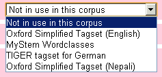

CQPweb manual: Some instructions on setting up CEQL
This component of the CQPweb manual was last updated on 2010-06-22 for CQPweb version 2.14.
Introduction: What is CEQL?
CEQL is the Common Elementary Query Language, designed by Stefan Evert as a novice-friendly alternative to the normal CQP query syntax. The most complete documentation of CEQL is in Hoffmann et al., Corpus linguistics with BNCweb. In the BNCweb and CQPweb interfaces, it is often referred to as “simple query syntax”.
CEQL has two major features: (1) simplified “wildcards” that make specifying patterns less complex than with regular expression syntax, (2) special shorthand for quick access to certain word-annotations, i.e. Corpus Workbench positional attributes (p-attributes: these are represented by the columns in a vertical input file). These are as follows.
pattern search for “pattern” in the default word p-attribute
_pattern search for “pattern” in the primary annotation
{pattern} search for “pattern” in the secondary annotation
_{pattern} search for “pattern” in the tertiary annotation
{pattern1/pattern2} search for the combination of “pattern1” and “pattern2” in the combination annotation (or combo annotation for short)
The terms primary, secondary, tertiary, combination annotation are a generalisation, within CQPweb, of the original BNCweb system, which was as follows:
word search for a given word
_C5PosTag search for a given Claws5 (BNC-style) POS tag
{Lemma} search for a given lemma
_{SimpleTag} search for a given “wordclass” from the Oxford Simplified Tagset
{Lemma/SimpleTag} search for the combination of the given lemma and the given wordclass
NB: this is an extension to CEQL originated in BNCweb and replicated/generalised in CQPweb.
Because of CQPweb’s design goal of user-interface compatibility with BNCweb, the system has been set up to make it as easy as possible to use CEQL in this “default” way.
However, CEQL is fully configurable within CQPweb, so these different syntaxes can be used to target whatever p-attributes you like. For example, you could make the {pattern} syntax target a semantic tag, or make the _pattern syntax target a phonetic transcription.
But, as a general recommendation, it is best to follow this default style unless you have a particular reason for doing otherwise, to minimise the number of surprises the user will face.
Similarly, it is recommended that unless you have a particular reason for doing otherwise, you should normally set up your tertiary annotation (simple tags) to use the same labels that are available in the Oxford Simplified Tagset and the aliases based on it – see below for more information.
A short diversion: The Oxford Simplified Tagset
In the previous section reference was made to the Oxford Simplified Tagset, and this will be mentioned at several points in the remainder of this document.
The “Oxford Simplified Tagset” (OST) is a label given in retrospect to the system of word classes established as an abstraction across the categories of the Claws5 tagset in the BNC-XML edition. They are defined as groupings of Claws5 tags; a description is available as part of the BNC User Reference Guide here:
http://www.natcorp.ox.ac.uk/docs/URG/codes.html#klettpos
They are also sometimes referred to as “lemma-tags”, because, while the different forms of a lemma might have different POS tags (e.g. different forms of a verb lemma would have VVZ, VVD, VVI and so on in Claws5/Claws7 tags) all forms of one lemma would have the same OST tag (VERB in this case).
In principle it is language-independent, because certain classes could be left unused, or supplementary classes added, depending on the grammatical structure of the language in question.
Because of its de facto standardisation as a simple tagset due to the wide distribution of the BNC and, especially, the wide usage of BNCweb, use of the OST for “simplified” POS annotation in corpora is recommended. However, the basic OST as in the BNC-XML edition has been extended by the use of mapping tables in the CEQL tertiary annotation. See below.
The four types of annotation
Primary annotation
The primary annotation is specified when you install a corpus into CQPweb, unlike the secondary, tertiary and combination annotations. If you have any annotation at all, it is compulsory for one of them to be primary – whereas you are entirely at liberty, if you want, to leave the secondary, etc., annotations unspecified.
The recommended setup is for the primary annotation to be a part-of-speech tag, at the level of detail found in tagsets like Claws5 or Claws7.
In CEQL, the primary annotation is accessed via the _pattern syntax – chosen because it is mnemonic of the now-antiquated encoding of POS tags with an underscore separating them from the word-form, thus: The_ART cat_NN1 sat_VVD on_II the_ART mat_NN1.
Note that searches for primary annotation are case-sensitive, even if the Simple Query (ignore case) option is selected. The case-sensitivity of a “simple query” applies only to matching words. This case-sensitivity is, again, an implication of the assumption that the primary annotation will be a POS tag – in some tagsets, different case forms may have a different meaning.
The primary annotation is assumed to be primary in the “most important” sense as well as int the “first” sense. It has the following special features:
It is shown in the “tooltip” box that pops up when the mouse hovers over a concordance hit (assuming JavaScript is enabled in the browser).
Primary annotation (in this case, Claws7 tag) displaying in a concordance.
When you sort a concordance, you can thin the results according to the primary-annotation tag found at a particular location.

Control for specifying primary-annotation tag required at the sort-position
Likewise you can filter collocation results according to the primary-annotation tag of the collocate.

Collocation control allowing “filtering” of results.
The primary annotation can be made visible in the “context” display of a concordance hit by pressing the [show tags] button.

Concordance context display with primary annotation visible (Claws7 tags). Hit is in bold.
The “frequency breakdown” function can work across primary-annotation as well as / instead of word-form.

Frequency breakdown across annotation (even though original query was wordform-based)
So, as a general rule, it makes sense to choose as primary annotation the tagging that you think your users will need to use the most. Again, it is anticipated that for most setups and most corpora, this most-useful annotation will be POS tags.
Secondary annotation
The secondary annotation is searched for with the {pattern} syntax.
The recommended setup is for the secondary annotation to be a lemma (otherwise sometimes referred to as a “headword” or “lexeme”, that is, an uninflected or citation form corresponding to a group of inflectionally-related word forms).
Secondary annotation searches are case-insensitive, even if the Simple Query (case-sensitive) option is selected – since lemmatisation software may standardise to lowercase, uppercase, or some mixture.
Tertiary annotation
The tertiary annotation is searched for with the _{pattern} syntax.
This part of CEQL is critically different from the primary and secondary annotations in that the search is mediated by a mapping table. Mapping tables represent by far the most complex aspect of CEQL, and they are described in detail in a separate section.
In brief: Every tertiary annotation must specify, as well as a p-attribute, a mapping table. The mapping table defines a list of strings that can be searched for in the tertiary annotation. These user-searchable strings (called aliases) are “mapped” to the query patterns that are actually used in searching the corpus.
This rather complex setup has two purposes. First, it allows multiple aliases to be defined for a single value of the p-attribute being searched. Secondly, it allows aliases to correspond not to single annotation values, but to regular expressions across multiple values.
The recommended setup is for the tertiary annotation to be a simplified POS tag (that is, one which tags major word class distinctions, but not inflectional or lexico-semantic subcategories as many fine-grained POS tagsets do). Furthermore, it is recommended that the tags of the Oxford Simplified Tagset be available if relevant to the language of the corpus – whether the OST tags are used in the underlying p-attribute, or made available as aliases to an underlying set of tags that do not comply to the OST. Note that it is not necessarily recommended that the OST aliases should necessarily correspond to precisely the original OST categories developed on the basis of the C5 tagset. Exactly what word categories an OST tag like, say, ADJ corresponds to will be dependent on (a) the language of the corpus and the form of the underlying tagset and (b) the descriptive/theoretical preferences embedded in the mapping table used. What is important, from the point of view of maintaining consistency of user interface, is that a user typing _{ADJ} should get back something that corresponds roughly to what they would expect.
There are two ways that this can be accomplished: with a separate p-attribute that contains simple POS values, or by targeting the tertiary annotation to the full-POS attribute (typically the one used for the primary annotation) and using a mapping table that contains regular expressions that group the complex POS tags together appropriately. Both of these will be illustrated below.
Tertiary annotation searches are case sensitive, even if the Simple Query (ignore case) option is selected – since, as with normal POS, simplified POS tags may potentially make meaningful distinctions based on case.
Combination annotation
The combination annotation (combo for short) is searched for with the {pattern1/pattern2} syntax.
There are two different ways that the combo annotation can be exploited, depending on whether or not it is linked to a specific p-attribute in the indexed corpus.
If the combo annotation is linked to a specific p-attribute, then it is expected that the strings in that p-attribute will be of the form ATT1_ATT2 – that is, a single “combo” field in which two distinct attributes are linked together. In this case, a search for {pattern1/pattern2} will match tokens where pattern1 matches ATT1 and pattern2 matches ATT2. The matching is case-insensitive; pattern2 is put through the same mapping table that is specified for the tertiary annotation prior to matching against ATT2.
If the combo annotation is not linked to a specific p-attribute, then the fallback is to use the secondary and tertiary annotations as follows: {pattern1/pattern2} is a double-criteria: pattern1 must match the secondary annotation, and pattern2 must match the tertiary annotation. Use of case sensitivity, a mapping table etc. are as normal for the secondary and tertiary annotations in this case.
Considered in isolation these functionality rules may seem moderately arbitrary. However, they have been tailored to the recommended usage of the combo annotation, which is as follows:
If a p-attribute is specified, the recommended setup is for the combo annotation to be a tagged lemma – that is, for ATT1 to be a headword/lemma (as in the secondary annotation) and for ATT2 to be a simplified part-of-speech (as in the tertiary annotation).
If a p-attribute is not specified, then the recommended configuration of the combo annotation is the sum of the recommended configurations for secondary and tertiary annotations.
In either case, the upshot of the combo annotation in its recommended configuration is that it allows searches of this form: {badger/V} or {badger/N}, distinguishing the verbal lemma “to badger (pester)” from the nominal lemma “badger (stripy animal)”. This is useful in English where headwords are uninflected (stem) forms, and many headwords may be both nouns and verbs. In other languages, it may be less useful. (Note, it is because of this usage in English, where different simple POS tags may be deemed as indicating separate lemmata from a single root form, that in the BNCweb-style setup of CEQL, the combo annotation’s p-attribute is usually called lemma whereas the secondary attribute – a lemma – is called hw for “headword”. See also the discussion of BNCweb-style annotation below.)
Given the two possible ways of using the combo annotation, it might be wondered which is better (assuming the recommended configuration). There are advantages and disadvantages to using a separate, conjoined p-attribute for the combo annotation. The advantages are that (a) it makes combo-annotation queries much fast if the corpus is very large, and (b) a frequency list of lemma-plus-wordclass is created. CQPweb creates a frequency list for each p-attribute in the corpus but not for the intersection of any two or more attributes. So if there is a separate conjoined p-attribute, you have a frequency list in which badger(s)-as-noun and badger(s,ed,ing)-as-verb are counted separately – as well as the normal “lemma” list where all badger are counted together. The disadvantage of having an actual p-attribute for the combo is that the corpus input files must be manipulated to add this p-attribute, and once the corpus indexed there is a great deal of duplicate information within both the Corpus Workbench index and the supporting frequency databases – so more disk space is used than is, strictly speaking, necessary.
So if you have limited processor power but lots of disk space, prefer to use an actual conjoined p-attribute. If you have lots of disk space but limited processor power, prefer the fallback mechanism. If you have ample supplies of both, it probably does not make much difference.
Corpora with minimal or no annotation
For many corpora, the ability to access up to four different p-attributes via CEQL is overkill – the corpus data may consist solely of word-forms in a single column, or simply of word-forms plus either part-of-speech or lemma.
If this is the case, simply configure the primary and/or secondary annotation on its own and leave the others unconfigured (of course, if there is absolutely no word-level annotation, then it is not possible to configure CEQL because there are no p-attributes to link up with the primary, secondary, tertiary etc. annotations).
If users attempt a query using CEQL syntax for an annotation which has not been configured, CQPweb will print an error message and abort – the query will not run at all.
Mapping tables
What is a mapping table?
Within CEQL, a mapping table is a series of associations, either one-to-one or one-to-many, between aliases that may be used in a CEQL query of the form _{pattern} or {pattern1/pattern2} (that is, a tertiary annotation or second part of a combo annotation), and regular expressions that match one or more items found on the p-attribute(s) that the tertiary and combo annotations are linked to.
Within CEQL, the tertiary annotation can only be queried with the use of a mapping table. The mapping table thus adds a layer of abstraction or indirection between the user and the actual concrete contents of the corpus. Direct access to the tertiary annotation is not possible through CEQL (it is, of course, possible with CQP syntax). All queries referencing the tertiary annotation must go via the mapping table – and if no mapping table is defined, then tertiary annotation queries are not available.
The upshot is that what the user enters is separated from what is actually there in the corpus. Moreover, the user can only enter one of the values that is defined as an alias in the mapping table. There is, however, no reason that an alias can’t be the same string as the regular expression that it maps to. It is entirely legal if, say, VERB is a possible value for the tertiary annotation – to create within the mapping table an alias “VERB” which maps straightforwardly to the pattern “VERB”.
When the user enters a query of the form _{XXX}, the form XXX is looked up in the mapping table. Assuming that XXX is a valid alias, it will be replaced in the query by the search pattern (regular expression) that that alias is linked to. So, for instance, in the standard BNCweb-style setup, the alias “N” is linked to the regular expression “SUBST”. So, the query _{N} actually searches the relevant p-attribute for the string “SUBST”. If XXX is not a valid alias, then the query will be rejected as invalid.
The purpose of aliases is linked to the recommended use of the tertiary annotation. As noted above, the tertiary annotation is optimised for use as a simplified part-of-speech tag. While it is possible for simplified tags to be encoded as a separate p-attribute – and, indeed, this is the case in the BNCweb-style setup – it is not necessary. Assuming that normal/“complex” POS tags are present, it is possible to define tertiary-annotation aliases such that they map to regular expressions across multiple tags. For instance, let us consider the Claws7 tags NN1 (singular common noun), NN2 (plural common noun), NP1 (singular proper noun) and NP2 (plural proper noun). In a corpus which is required to have a simple-POS tertiary annotation, there are two ways to set up CEQL.
In the vertical-format corpus, generate an extra p-attribute for simple POS (e.g. by adding the simple tag NOUN to every word that has a standard POS tag beginning in N) which is then indexed. Then, create a mapping table where aliases – ideally the de facto standard aliases of the OST and BNCweb – are mapped in a simple way to these simple POS (e.g. mapping the alias “NOUN” to “NOUN”).
Do not generate any extra p-attributes; instead, when configuring CEQL, set the tertiary annotation to search the p-attribute containing the “complex”, but using a mapping table that links aliases to appropriate regular expressions across the original tagset. So, in this case, the mapping for nouns would need to be from the alias “NOUN” to the regular expression “N.*”, which matches all four of the tags we are thinking of, i.e. NN1, NN2, NP1, NP2.
Of the “default” setups discussed below, the TreeTagger-style setup uses the second of these techniques, whereas the BNCweb-style and Lancaster-style setups use the first.
As noted in the discussion of the tertiary annotation above, it is recommended that mapping tables for simplified part-of-speech tags should implement, if at all possible, the category labels and aliases used in BNCweb (the Oxford Simplified Tagset). These tags are:
Aliases used in BNCweb
A as a synonym for ADJ
ADJ (adjective)
ADV (adverb)
ART (article)
CONJ (conjunction)
INT as a synonym for INTERJ
INTERJ (interjection)
N as a synonym for SUBST
PREP (preposition)
PRON (pronoun)
STOP (punctuation)
SUBST (nouns and similar)
UNC (unclear / residual)
V as a synonym for VERB
VERB (verb)
$ as a synonym for STOP
The OST’s own mappings from the Claws 5 tagset are given in the BNC user reference guide. From this information, if desired, a mapping table using regular expressions could be compiled enabling OST queries to be run across a attribute that contained only Claws5 tags.
A mapping has also been defined from the Claws7 tagset to the OST, devised in such a way as to maximise consistency of behaviour between the Claws5-based OST and the Claws7-based OST; it is as follows:
Any Claws7 tag beginning with A goes to ART, except APPGE, which goes to PRON.
Any Claws7 tag beginning with B or C goes to CONJ.
Any Claws7 tag beginning with D goes to ADJ, except DDQ*, which go to PRON.
Any Claws7 tag beginning with E goes to PRON.
Any Claws7 tag beginning with I goes to PREP.
Any Claws7 tag beginning with J goes to ADJ.
Any Claws7 tag beginning with M goes to ADJ.
Any Claws7 tag beginning with N goes to SUBST.
Any Claws7 tag beginning with P goes to PRON.
Any Claws7 tag beginning with R goes to ADV.
Any Claws7 tag beginning with T goes to PREP.
Any Claws7 tag beginning with U goes to INTERJ.
Any Claws7 tag beginning with V goes to VERB.
Any Claws7 tag beginning with X goes to ADV.
Any Claws7 tag tagging a punctuation mark goes to STOP (these begin with Y in C6, are actual punctuation marks in C7).
Any Claws7 tag beginning with Z goes to SUBST.
Anything else (including GE, FO, FU, FW) goes to UNC.
Built-in mapping tables
CQPweb currently comes with four built-in mapping tables, each for a different language; their purpose is to demonstrate the range of options available and the flexibility that is possible, while still maintaining meaningful uses for the tags defined in OST. They are as follows.
Oxford Simplified Tagset (English) (oxford_simplified_tags)
This is the simplest of the built-in mapping tables, adopted directly from BNCweb-style CEQL setup. The mappings it contains are listed above (under “Aliases used in BNCweb”). Every OST tag is mapped to itself (so “SUBST” to “SUBST”, “ADJ” to “ADJ”, and so no), but in addition user-friendly aliases are defined (A, INT, N, V, $).
Oxford Simplified Tagset (Nepali) (simplified_nepali_tags)
The simplified Nepali tagset exemplifies how the OST may be modified for use in a language with structural differences to English, whilst still maintaining the familiar user search strings.
The underlying simplified Nepali tags (derived from the “complex” Nelralec Tagset) are similar to the OST with some differences: ADJ, N, VERB, ADV, DEM, CONJ, POSTP, PRON, PART, PUNC, and MISC. Each of these is defined as an alias to itself. The remaining elements from the OST and the BNCweb-style set of aliases are defined as alternative aliases for these tags. So “SUBST” (an OST tag) is defined as an alias for “N”, “A” as an alias of “ADJ”, and “V” of “VERB”. Some OST tags remain undefined – notably ART and PREP – but these correspond to grammatical categories that do not exist in Nepali. Still, in most cases, a user could enter the simplified tags they had learned to use with English, and get some meaningful results.
MyStem Wordclasses (russian_mystem_wordclasses)
MyStem is a commonly used morphological analyser / lemmatiser for Russian. It outputs major word classes that are approximately equivalent, in level of granularity, to the OTS.
The CQPweb mapping table for MyStem word classes makes available all the tags in the underlying p-attribute, but adds aliases for the abbreviations of the OST where an equivalent class is clear. So, for example, “STOP” is defined as an alias of the regular expression “(PUNCT|SENT)” – the two tags PUNCT and SENT each covering a subset of the punctuation marks that in the OST are all covered by STOP.
TIGER tagset for German (german_tiger_tag)
The underlying p-attribute in this case actually contains just the tags of the STTS tagset; the key factor about their use in the TIGER corpus (for which this mapping table was devised) is that full TIGER-format POS-tags also contain morphological (inflectional) information, so in this context the bare STTS tags are a “simple” POS tag, even though the STTS tagset may be considered a “complex” tagset on its own terms.
There are two major elements in the TIGER mapping. Firstly, every tag in the STTS tagset is defined as an alias for itself, giving access to the underlying STTS tags in this p-attribute. Secondly, a set of alias-to-regular-expression mappings are defined to make some of the main OST tags meaningful in terms of groupings across the STTS tags, as follows:
Regular expression mappings across STTS tags in the TIGER corpus setup
"ADJ" => "ADJ.*"
"SUBST" => "N.*"
"NOUN" => "N.*"
"VERB" => "V.*"
"N" => "N.*"
"V" => "V.*"
"PRON" => "P.*"
"ADP" => "AP.*"
"AUX" => "VA.*"
So, for instance, the STTS tagset has two tags for adjectives – ADJA for attributive and ADJD for predicative adjectives. The ADJ alias maps to a regular expression which would match both these tags. Similarly, the NOUN and N aliases map to a regular expression which will capture all three STTS noun tags (NE, NN, and NNE).
[ To be added to the code and then documented here: OST-simulators-by-regex from Claws5, Claws7, and TreeTagger output ]
All the “built in” mapping tables are contained within the code of CQPweb. However, they are not available for use by default. They are activated by the following procedure:
Go to “Admin control panel”
Click on the “Mapping tables” option under “Misc” on the menu
Scroll down to the table headed “Built-in mapping tables”
Click on the button that says “Click here to regenerate built-in mapping tables”
Once the built-in mapping tables have been regenerated, they are available for use in CEQL configuration, but their underlying code can also be examined within the admin interface. This can be useful as a demonstration of how mapping tables should be entered into the system – the format of mapping tables is explained below, but examples are always helpful.
To view the code of the built-in mapping tables:
Go to “Admin control panel”
Click on the “Mapping tables” option under “Misc” on the menu
Click on the link that says “Click here to view all stored mapping tables”
See, as well as the names, handles and code for the built-in mapping tables, the details of any mapping tables you may have added yourself.
Creating additional mapping tables
Step 1: to create a mapping table, you must devise a list of alias-to-regular-expression mappings (see the sections above for background on these mappings).
Mapping tables must be expressed in a particular format. (If you know the Perl scripting language, it may interest you to know that the format is that of a Perl hash table.) The full definition of the mappings within a mapping table, laid out in the correct format, will be described here as the “code” of that mapping table.
Each mapping has the following form:
"ALIAS" => "SEARCH TERM"
where ALIAS is what the user enters, and SEARCH TERM is what is actually searched for. This can be an actual value that is present on the p-attribute that the mapping table relates to, or it can be a regular expression that matches multiple annotations found on this p-attribute. Note also the quotation marks must be “straight quotes” not “curly (or smart) quotes”. If you use the latter style of quotation marks, it won’t work. If you want to include single or double quotation marks within the aliases or regular expressions, they must be escaped with a backslash.
For example:
"V" => "VERB"
A simple mapping creating an alias for the tag VERB.
"V" => "V.*"
A mapping that makes the single letter V function as an alias that will, ultimately, match any tag beginning with V on the relevant p-attribute.
The mappings within a mapping table, all of the form above, are placed one after the other, separated by commas. Note there must be no comma after the last mapping in the list. Finally, the entire mapping table is surrounded by a pair of braces. The form of a mapping table containing N mappings is, then, something like this:
{
"ALIAS 1" => "SEARCH TERM 1",
"ALIAS 2" => "SEARCH TERM 2",
"ALIAS 3" => "SEARCH TERM 3",
[...]
"ALIAS N MINUS 1" => "SEARCH TERM N MINUS 1",
"ALIAS N" => "SEARCH TERM N"
}
You are strongly recommended to keep a copy of your mapping table offline somewhere, say in a plain text file, to avoid losing the work you put into composing it if something goes amiss in the CQPweb database!
Step 2: To enter your own mapping table into the system, follow this procedure:
Go to “Admin control panel”
Click on the “Mapping tables” option under “Misc” on the menu
See a form with three slots: one for the handle of the mapping table, one for a descriptive title, and one for the code.
Complete all three slots.
Click on the “Create mapping table!” button.
As noted above, the CEQL tertiary and combo annotations, because they make use of mapping tables that define all the possible searches that users are allowed to input, are not really suitable for linking to p-attributes that can have an indefinite number of different values. They are optimised for p-attributes like simple POS, where every word has one of a finite (probably small) set of possible values, all of which can be specified.
That said, it is certainly not compulsory, when designing your own mapping table, to make every tag in the underlying tagset searchable. Any tags which cannot be matched by at least one of the regular expressions in the “target” half of your mapping will, simply, not be accessible via the tertiary annotation syntax _{pattern}. For instance, if you don’t specify a mapping that leads to the tag “XX” (either verbatim or via a possible regular expression match), it would then not be possible to search for words that have the tag “XX” using the form _{XX}.
Neither is it compulsory to make use of the flexibility granted by aliases. If you just want users to have direct access to the underlying values of the p-attribute to which the tertiary annotation syntax is linked, all you need is a mapping table with one mapping for each possible tag on that p-attribute, mapping it to itself.
How to configure CEQL
Linking secondary, tertiary and combo annotations to p-attributes
The procedure for linking CEQL annotations to p-attributes is simple.
Log on as an administrator, and go to the main query page for the corpus you want to work with
Click on “Manage annotation” – under “Admin tools” in the menu
At the bottom of the page is a form for managing metadata on each p-attribute. This is not relevant to CEQL. The part of the page that matters for CEQL is at the top of the screen, and looks like this:

CEQL setup controls (example for a Nepali corpus)
Each dropdown box except the fourth lists all the available p-attributes in the indexed corpus.

Dropdown listing available p-attributes
Use these to link each CEQL annotation format that you wish to a p-attribute.
Note that changing the primary annotation affects all the uses of the primary annotation outlined in the section describing the different purposes for which it is treated as the most important.
You can link more than one CEQL annotation format to the same p-attribute if you want. One typical reason to do this would be if you had only one POS p-attribute, which was both the primary and tertiary annotation (but with a mapping table making the tertiary annotation act as a simplified tag: see above),.
If you want to leave one or more CEQL annotation formats unlinked to any p-attribute, select the option “Not in use in this corpus”
“Not in use in this corpus” is the default value which will be set before you configure the CEQL.
When you are done, press “Update annotation settings”.
Linking a mapping table to the tertiary annotation
This is done using the same form explained in the previous section.
The fourth dropdown lists the available mapping tables
You should see the built-ins, if you have regenerated them, plus any you have loaded in yourself.

Dropdown listing available mapping tables.
Select the mapping table you wish to use, and then press “Update annotation settings”
If you do not wish to specify a mapping table – for instance, if you are not using the tertiary and combo annotations – then it can be set to “Not in use in this corpus”
Note that if you select a p-attribute for the tertiary annotation, as above, but do not select a mapping table, all queries using the tertiary annotation will result in a CEQL syntax error – but there will be no warning on the “Manage annotation” page!
The three “normal” setups
Three combinations of particular p-attributes and particular wasy in which these p-attributes relate to
The “normal” setups include:
Specified names for the p-attributes
Specified associations between CEQL and those p-attributes
Preferred mapping tables / tertiary annotation tagsets
In the future, these three will all be available for default setup (so that CEQL will be configured at the same time as
TreeTagger-style setup
The TreeTagger program outputs text in columnar format with part-of-speech tags and lemmata, as shown in this example (borrowed from the TreeTagger website).
word pos lemma
The DT the
TreeTagger NP TreeTagger
is VBZ be
easy JJ easy
to TO to
use VB use
. SENT .
Note that pos contains Penn Treebank POS tags. This three-column format is, of course, also a highly appropriate input format for Corpus Workbench. In fact, the example data provided for the Corpus Workbench indexing tutorial is in this format.
The recommended CEQL setup for a TreeTagger-style corpus in CQPweb is as follows:
the primary annotation will be pos
the secondary annotation will be lemma
the tertiary annotation will be pos
the combo annotation will fall back to secondary/tertiary (lemma and pos)
the mapping table used for the tertiary and combo annotations will map OST-style class handles like “SUBST” or “ADJ” to regular expressions such as “N.*” or “J.*” respectively, and so on.
There is not yet a built-in mapping table create simple POS classes by regular expressions across the Penn Treebank tagset (but this is on the things-to-do list).
BNCweb-style setup
The XML edition of the BNC has the following format for tokens:
<w c5="VVD" hw="finish" pos="VERB">finished </w>
In the vertical CWB-input format used for BNCweb, this format is transmuted to the following:
word pos hw class lemma
finished VVD finish VERB finish_VERB
CEQL was initially designed for this kind of input format, and pos, hw, class and lemma correspond directly to the primary, secondary, tertiary, and combo annotations respectively (note the somewhat misleading distinction between the handles hw and lemma, already discussed, and the fact that the pos p-attribute does not refer to the same information as the pos XML-attribute in the original files).
The mapping table used for class is the standard OST for English that is built into CQPweb.
Lancaster-style setup
Lancaster-style setup extends the BNCweb-style setup by adding semantic tags from the USAS tagset. Input files look like this:
word pos hw semtag class lemma
finished VVD finish T2d VERB finish_VERB
USAS semantic tags are represented in a regular-expression-friendly format that avoid the use of regex metacharacters as part of any semtag. The use of + and – in the original tagset is changed to u and d (for “up” and “down”). Full stops are replaced with colons. Forward slashes are replaced with tildes. The semantic tags are not accessible via CEQL but only through full CQP syntax.
The pos field represents a Claws6/Claws7 tag rather than a Claws5 tag, as is the case in BNCweb.
Otherwise, it all works the same as a BNCweb-style corpus in terms of the links between CEQL and the p-attributes. The mapping table used for class is the standard OST for English that is built into CQPweb.
If you have input files in this format, you can use the “Use default setup for P-attributes” option when indexing the corpus. This will not only install all the info for these p-attributes, but also configure all the CEQL syntax as well, so no further set up should be necessary. Note: this is an under-development feature, and the fact that only the Lancaster-style is supported is a known limitation. In future we hope to have multiple built-in formats, including BNCweb-style and TreeTagger-style.
Summary
The following table summarises the key features of the CEQL annotation query formats.
|
Annotation |
Syntax |
Uses mapping table? |
Case sensitive? |
Usually used for… |
BNCweb-style p-att |
|
Word |
pattern |
No |
Optionally |
Word form |
word |
|
Primary |
_pattern |
No |
Yes |
POS tag |
pos |
|
Secondary |
{pattern} |
No |
No |
Lemma |
hw |
|
Tertiary |
_{pattern} |
Yes |
Yes |
Simple tag |
class |
|
Combo |
{pattern1/pattern2} |
No/yes |
Normally: no Fallback: no/yes |
Lemma + simple tag joined by _ |
lemma |
CQPweb v2.13 © 2008-2010 – documentation by Andrew Hardie, andrewhardie@users.sourceforge.net